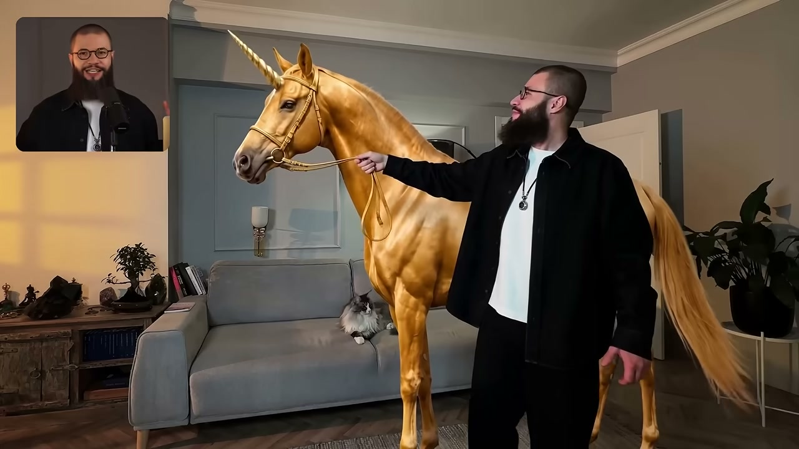
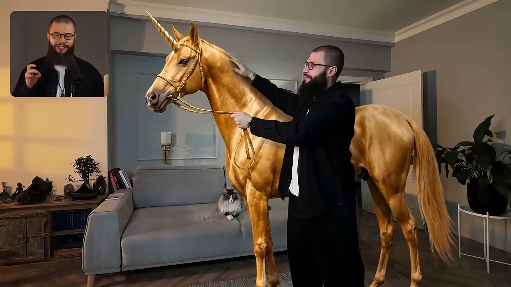
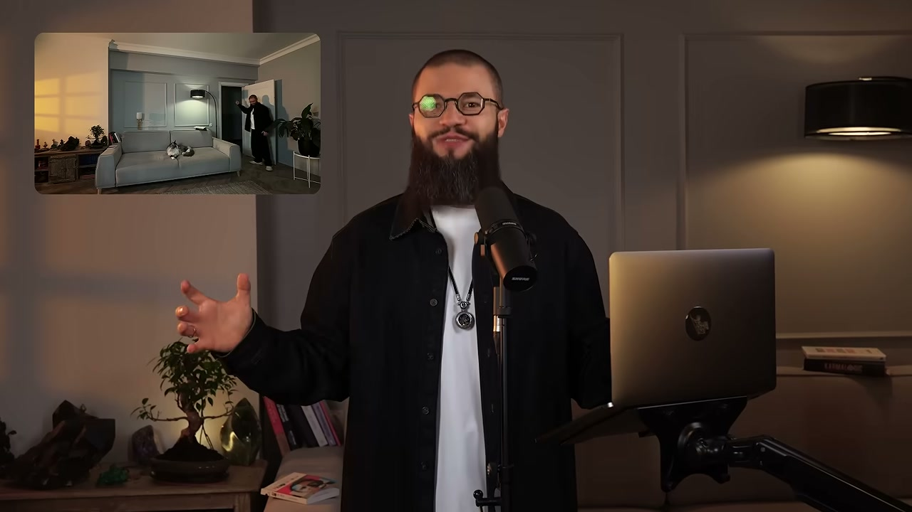
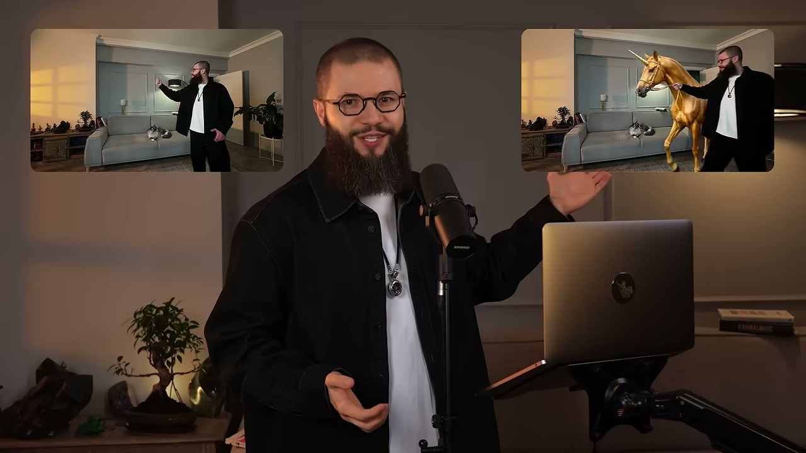

Разбор интро: «Как я делаю БЕЗУМНЫЕ ИИ-видео в SeeDance 2.5 одним промтом за 5 минут»
Канал «Георгий Ривера», ролик от 9 августа 2026, полная длина 17:00. Разбирается только интро — первый блок, где автор ещё не учит, а продаёт досмотр.
Граница интро: 0:00–0:48. Три признака совпали. Первый: плотность монтажа —
10 склеек за первые 49 секунд (средний план 4,9 с), дальше за 71 секунду всего
4 склейки, падение в 3,5 раза, и обратно она не растёт. Второй: слово-переключатель —
на 0:47 звучит «Давайте сразу к делу». Третий: смена времени глагола — до этой точки
сплошное будущее («покажу», «вы сможете»), сразу после — настоящее
действие («я сделаю генерацию на предыдущем движке, чтобы мы могли сравнить»).
длина интро; типичное интро — 60–90 секунд, это короткое
10
склеек внутри интро (после неё — 4 склейки за 71 секунду)
4,9 с
средний план — длина куска между склейками
137
слов в минуту; норма разговорной русской речи ~130
112
слов всего произнесено за интро
5
законченных мыслей — смысловых единиц речи
11
сцен: показ ИИ-генераций, титры-обещание, говорящая голова
3. Пост
Реалистичное видео на 30 секунд — одним промтом за пять минут
Прямо сейчас покажу, как за несколько простых шагов создавать реалистичные тридцатисекундные видео в SeeDance 2.5 буквально одним промтом. Пять минут работы — и готовый ролик. По мне, это что-то невероятное.
Такие видео можно делать для своих соцсетей, для развития бизнеса или зарабатывать на них — за один ИИ-ролик платят от пяти тысяч до ста тысяч рублей.
Но сперва хочу показать то, что мне кажется ещё круче. Я покажу, как добавить реалистичную ИИ-генерацию на своё собственное видео.
Отличие этого подхода вот в чём: я беру своё настоящее видео, снятое на телефон, и прямо на него добавляю всё, что захочу. Например, золотого единорога, которого я глажу у себя в комнате.
Как вам такая идея? Давайте сразу к делу.
4. Цепочка ходов
Обещание результата→Показ результата живьём→Снятие сложности («простых шагов», «5 минут»)→Зачем тебе это: соцсети, бизнес, деньги→Перебивка ожидания: «но сперва — ещё круче»→Отстройка своего подхода→Показ до/после на своём видео→Вопрос-вовлечение→Переключатель «сразу к делу»
Чего в этом интро нет: «не ты один», снятия вины, авторитета источника, просьбы досмотреть и подарка за досмотр. Автор не работает с болью вообще — он сразу продаёт результатом.
«Прямо сейчас покажу, как за несколько простых шагов вы сможете создавать такие реалистичные тридцатисекундные видео SeeDance 2.5 буквально одним промтом, всего за 5 минут. И как по мне, это что-то невероятное.»
«И отличие этого подхода в том, что я возьму своё настоящее видео и прямо на него добавлю, да, всё, что захочу. Например, золотого единорога, как на этом видео.»




Вопрос-вовлечение + переключатель210 слов/мин — резкий разгон, самая быстрая точка интро